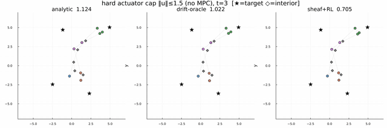
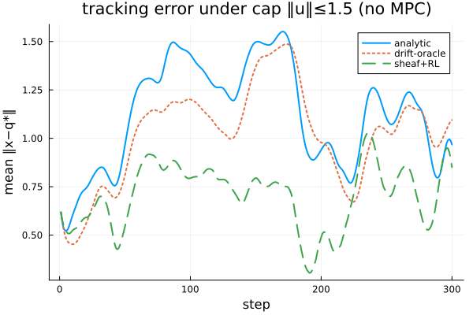

Hard actuator constraints, without MPC
The final demonstration removes the last convenience — unbounded control — and shows the actuator-limited regime handled with no model-predictive control and no conic solver at runtime: the second-order cone enters only as a closed-form projection at the policy output.
Demonstration 8: hard actuator constraints, with no MPC
Why this matters. Every demonstration so far left the control unconstrained (except the quad's saturation). The analytic law $-k\,g^{+}\eta$ is unbounded — it cannot respect a hard actuator limit. The usual way to get optimal control under such a limit is a second-order-cone program solved as model-predictive control each step. Here we show the actuator-limited regime can be handled with no MPC at all: the cone enters only as a closed-form projection at the policy output.
Setup. The multi-agent structure under drift, but every control is projected onto the actuator ball $\lVert u\rVert \le \bar u$ (a second-order cone): $u = \Pi_{\text{ball}}(\cdot)$. No horizon, no optimization — Layer 1 stays the linear harmonic solve, Layer 2 is feedback plus a closed-form projection $\Pi_{\text{ball}}(u) = u\,\min(1,\bar u/\lVert u\rVert)$. No conic solver is used anywhere at runtime.
Result. Under a binding cap, the learned policy beats both the projected analytic law and the projected drift-oracle (mean $\lVert x-q^\star\rVert$, 30 scenarios):
| actuator cap $\bar u$ | analytic (projected) | drift-oracle (projected) | sheaf+RL (projected) |
|---|---|---|---|
| $1.5$ | 0.79 | 0.87 | 0.52 |
| $1.0$ (tighter) | 1.20 | 1.29 | 0.99 |


Why the drift-oracle is no longer the ceiling. With unconstrained control the drift-oracle (analytic + exact drift cancellation) was a meaningful upper bound. Under a binding cap it is not: spending the limited control budget to fully cancel the drift leaves too little to track, so the naive cancel-everything strategy is suboptimal — the projected oracle does no better than the projected analytic law. The learned policy instead allocates its limited budget between tracking and disturbance rejection — exactly the trade-off a conic MPC would optimize over a horizon, but here learned as feedback, with no online optimization.
This is the MPC-free conic extension: sheaf coordination plus a learned feedback policy handle hard second-order-cone actuator constraints — beating the analytic law that cannot respect them — with no model-predictive control and no conic solver at runtime. (The conic-MPC optimum, which does solve an SOCP each step, is the natural comparison ceiling and lives in its own treatment.)
What the learning adds (and when it does not)
Because the learned term is a residual on a stabilizing base controller, it does work only where the base is genuinely wrong:
- Known, feedback-rejectable dynamics (Demonstration 1) — the residual is $\approx 0$ and the policy matches the analytic baseline. A good feedback controller already rejects bounded disturbances; there is correctly nothing to add.
- Unknown time-varying drift (Demonstrations 2, 5) — the residual learns a disturbance-cancelling feedforward from the history window, tightening tracking substantially.
- Underactuation (Demonstration 3) — the residual makes sheaf-coordinated tracking work on a plant where no analytic sheaf law exists.
In summary: the cellular sheaf decides what each agent should track; a model-based feedback controller does most of how; and reinforcement learning supplies the correction the model misses. The contribution is the architecture — a decentralized, size-agnostic, $(A,B)$-free learned controller composed on top of sheaf coordination.
Implementation
See examples/RL/ (README.md documents the layout). The shared library lives in examples/RL/lib/ (sheaf_rl.jl, render.jl); trainers are in examples/RL/train/ and renderers in examples/RL/viz/. Data collection and behaviour cloning: train/bc_data.jl, train/behaviour_cloning.jl (Demonstration 1). Residual TD3 with a history window and time-varying drift: train/single_integrator.jl (Demonstration 2). The underactuated quadrotor on an LQR base: train/quadrotor.jl (Demonstration 3). The multi-agent structure: train/multiagent.jl (Demonstrations 4–6), train/heterogeneous.jl (Demonstration 7), train/actuator_cap.jl (Demonstration 8). Visualizations are produced by the matching scripts in examples/RL/viz/, and every documentation figure can be regenerated with examples/RL/refresh_viz.sh.